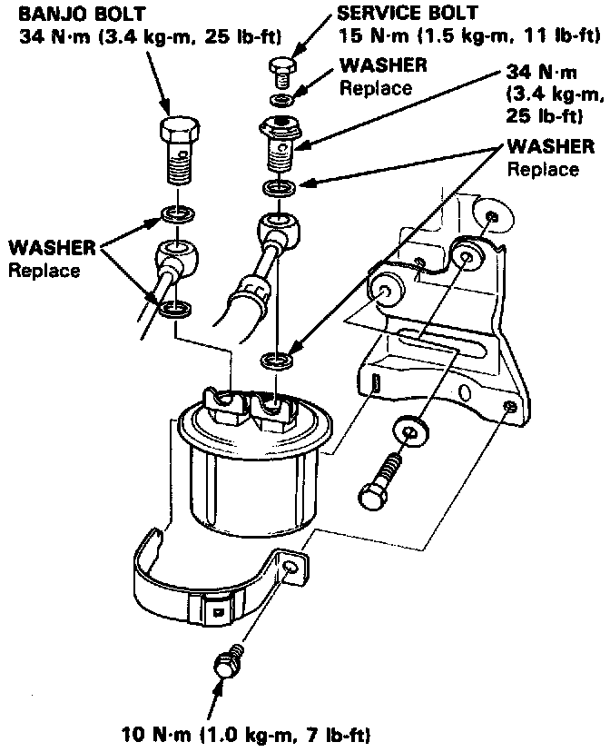

Fuel Filter: Service and Repair

Replacement
WARNING:
- Do not smoke while working on fuel system. Keep open flame away from work area.
- While replacing be careful to keep a safe distance between battery terminals and any tools.
The filter should be replaced every 4 years or 60,000 miles (96,000 km), whichever comes first or whenever the fuel pressure drops below the specified value 1290 - 340 kPa, 2.9 - 3.4kg/cm2, 41 - 48 psi (B17A1 engine: 340 - 390 kPa, 3.4 - 3.9 kg/cm2, 48-56 psi) with the pressure regulator vacuum hose disconnected] after making sure that the fuel pump and the pressure regulator are OK.
1. Disconnect the battery negative cable from the battery negative terminal.
NOTE: The GS and GS-R model radio may have a coded theft protection circuit. Be sure to get the customer's code number before disconnecting the battery.
After service, reconnect power to the radio and turn it on. When the word "CODE" is displayed, enter the customer's 5-digit code to restore radio operation.
2. Place a shop towel under and around the fuel filter.
3. Relieve fuel pressure.
4. Remove the 12 mm banjo bolt and the fuel feed pipe from the filter.
5. Remove the fuel filter clamp and fuel filter.
6. When assembling, use new washers, as shown.
Torque the Fuel Filter clamp bolt to:
7 lb-ft (10 Nm).
Torque the fuel hose banjo bolts to:
25 lb-ft (34 Nm).
Torque the service bolt to:
11 lb-ft (15 Nm).
7. START engine and check for leaks.